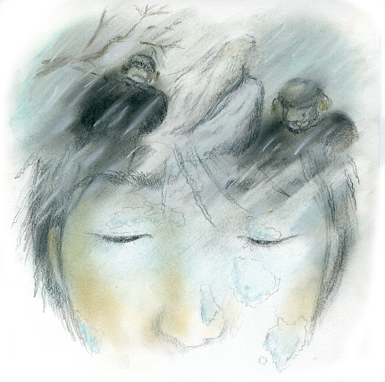

人の記憶の中には、本当にあったことなのか、あるいは自分の思いが創り上げた妄想のようなものなのか 定かではないものがある。街ですれ違った人が、実はどこかで会ったことのあるあの人ではなかったか、 と思いながら、それが誰だったか思い出せないときなど、記憶の部屋がざわざわと動き出し、なんとなく落ち着かなくなる。 それとは反対に、確かに体験したと確信にも似た思いがあるのに、その体験が現実離れしていて、人に話すこともはばかられ、 自分の中でじっと、その記憶を反芻するしかないものもある。今日は、そんな話の一つをしたいと思う。 あるとき、私は、北海道の知床半島のペキン岬で遭難していた。

十二月も末に近かった頃で、すべてが凍りつくような寒さだった。生まれて二十数年、九州を出たことのなかった私が北海道に行ったのは、
大学の卒論を仕上げるために、小説の舞台をこの目で見ておきたかったからである。
準備と言えば、大枚をはたいて買ったダウン・ジャケット、それに地図帳と時刻表くらいのものだった。
若さは、馬鹿さ、とは良く言ったもので、怖いもの知らず、ひと気のない冬の海岸を歩いた。そして、
その地で遭難した小説の船長は、いかに心細かっただろうか、などとのんきに考えていた。九州の午後三時は明るい。しかし、北海道はすでに陽が翳り始める時刻だったということには気付かなかった。
いつの間にか日は暮れて、あたりは真っ暗になっていた。あわてて、来た道を戻ろうとしたが、ふぶき始めて、
方角もわからなくなっている。気温はぐんぐん下がっていく。身を寄せる岩陰も見当たらず、歩いているつもりのまま、
凍えて気を失っていた。
それからどれくらい経ったのだろうか。私は人の気配に気付いた。何人かの黒い防寒服に身を包んだ男たちが、私を持ち上げようとしていた。そばには、白いひげを生やし、流れるような白い服と白髪をなびかせている仙人がいて、指図しているようだった。
「凍り付いているから、折れないようにそっと持ち上げるんだよ。あの小屋の陰でいいよ。まだ、中に入れちゃだめだぁ」
ゆっくりと、北海道特有の、やさしい訛りだった。
男たちの中の一人が言った。「早くあっためねぇと、死んでしまうべ」
「いやぁ、だめだ。こんなに凍ってるんだ。あっためたら、溶けちまうぞぉ」
遠くの世界からかすかに伝わってくるような男たちの話声を聞きながら、わたしは小屋のかげ、ひとまず風の当たらないところに運ばれた。
それから、男の中の一人が、雪をつかんで、ゆっくり、ゆっくり、私の身体をこすり始めた。
「折れねぇようにな。」仙人はまたしても言った。最初は、手の先、脚の先、それから腕、脚・・・すると、心臓がぴくんと動き、血がゆっくり指先、足先にかよってくるのがわかった。
「部屋に入れるべ。火なんぞ焚いちゃだめだぞ。溶けちまうからな」
風がないというだけの、極寒の漁師小屋だった。そこで、また、男はゆっくり、私を雪でこすっていった。助かるかもしれない、というかすかな希望がよみがえる。
「心臓が動いた」
男が叫んだ。
「おう、ゆっくり、ゆっくりもどせよ。魚と同じなんだからな。
うまく解凍すれば、泳ぎだすんだ。急いだら、死んじまうぞ」
そこまで聴いて、私は深い眠りに落ちた。
翌日、私は宿の布団の中で目を覚ました。昨日の遭難を、誰も知らなかった。
私は外出後、普通に戻ってきてそのまま部屋にいた、ということになっているらしかった。
私自身、吹雪の中で凍りついたはずなのに、手足に凍傷もなく、熱もなく平然と朝食を取りながら、昨日の遭難が、
夢ではないかと思えたのだった。
けれども、仙人は、確かに私にも言った。「零下三十度の吹雪の中で、
カチンカチンに凍ってしまったら、人も魚と同じなんだぁ。ゆっくり、上手にしなきゃ、死んじまうぞ。寒いからって、
すぐにあったかいところに入れたら、ショックで死んでしまう。
ゆっくり、血の巡りを思い出すようにこすってやる。
ゆっくり、ゆっくり。柔らかい布だって？それじゃ、まだあたたかすぎる。最初は雪だな。雪で、ゆっくりこすってやる。すると、さかなが、ゆっくり元に戻ると同じように、
自然にじんわりと血が戻ってくる。自分の力で、少し温まったところで、またゆっくり上手に解凍してやれば、凍傷にもならねぇんだ。
生き返ってよかったな。」
こんな話を、私は夢の中で聞いたというのだろうか？今まで考えたこともなかった内容の話を。あの、仙人は、確かに私を救ってくれた。
誰も信じてはくれないだろうが。
そして、ときどき、遭難して凍傷で手足を失ったというニュースを聞くたびに、私の経験を語りたい気持ちに駆られる。医療の裏づけもない、
あるいは夢の中の妄想と取られるかも知れない内容なので、さすがに声高にいう勇気はないが、万一、同じような状況に遭遇した人がいたら、
わたしが聞いた仙人の言葉を伝えたいと思い、この話を書いた。（了）